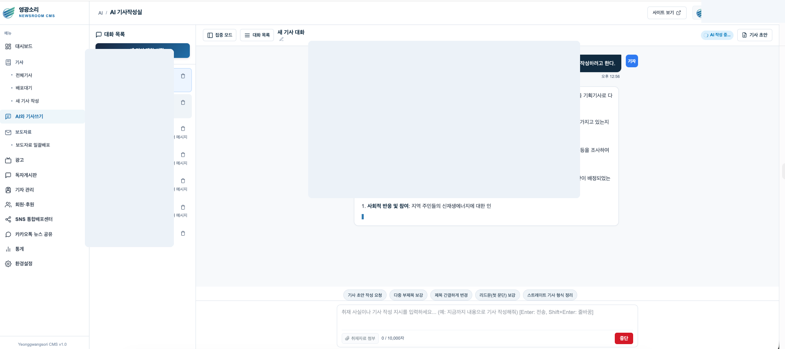
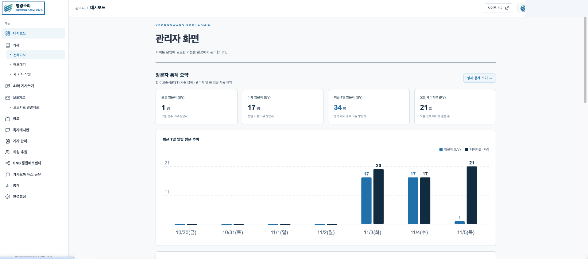

지역신문 실무 경험 기반
10년 이상의 기자 경험을 바탕으로 1인·소규모 편집국이 직접 운영할 수 있게 설계했습니다.
CMS TRIAL
체험을 신청하면 담당자가 확인 후 8자리 체험번호와 접속 방법을 안내합니다. 발급 전에는 공개된 CMS 운영 화면을 확인할 수 있습니다.
새롭게 창간을 준비 중이거나 노후 시스템 개편 또는 최신 AI CMS 도입이 필요하신가요?
신문사의 현재 환경에 가장 알맞은 맞춤형 솔루션을 안내해 드립니다.
신규 창간 준비자를 위한 홈페이지 구축
노후 홈페이지 개선 & 모바일 반응형 개편
취재·편집 효율화를 위한 AI 시스템 도입
10년 이상의 기자 경험을 바탕으로 1인·소규모 편집국이 직접 운영할 수 있게 설계했습니다.
취재 메모로 기사 초안을 작성하고 기관 보도자료를 정리하는 반복 업무를 줄입니다.
기자와 데스크가 역할에 따라 기사를 검토하고, 예약 발행과 SNS 배포를 한곳에서 관리합니다.
지면·팝업 배너의 노출 일정을 지정하고 지역 생활광고를 관리자 화면에서 관리합니다.
취재 메모와 인터뷰 요점으로 기사 초안을 작성합니다.
표준 기사 양식으로 초안을 구성하며 오탈자 교정을 보조합니다.
전용 수신함에서 보도자료를 기사 초안으로 바꿉니다.
기관 보도자료의 핵심 정보를 추출하고 사진과 함께 기사 편집 화면으로 연결합니다.
모바일에서도 기사를 편집하고 승인하거나 예약 발행할 수 있습니다.
발행 기사에 맞춰 채널별 문구와 카카오톡 공유 미리보기를 만듭니다.
배너 위치와 노출 일정을 지정하고 생활광고를 직접 관리합니다.
AI 광고제작실에서 만든 시안을 광고 관리로 보내 검토하고 게시 일정을 지정하는 흐름을 확인할 수 있습니다.
기존 기사와 사진을 분석해 데이터 이전과 검색 링크 유지 방안을 설계합니다.
기존 DB 접근 권한, 데이터 형식과 파일 구조를 검토한 뒤 지원 범위를 확정합니다.
신문사의 지속 가능한 경영을 위해 자체 구글 애드센스 연동과 지역 밀착형 생활광고 수익 모델을 체계적으로 지원합니다.
신문사 자체 Google AdSense 계정을 활용할 수 있도록 광고 배치와 연동 설정을 지원합니다.
구인구직, 부동산, 중고거래, 개업·행사 등 지역 생활정보를 광고 상품으로 운영할 수 있는 전용 페이지를 제공합니다.
10여 년의 현장 기자 경험을 바탕으로 설계하고 영광소리(ygsori.com)에서 실무 검증한 통합 운영 시스템입니다.
기사 작성부터 보도자료 처리, 발행과 광고 관리까지. 지역신문의 실제 업무를 이해하고 설계한 AI 통합 운영 시스템을 만나보세요.

현장 취재 메모와 인터뷰 요점을 AI와 대화하며 정리하고 신속하게 기사 초안으로 변환·교정합니다.

기사 승인, 예약 발행, 기자 권한 관리 및 광고 배너 운영 현황을 하나의 관제 화면에서 통합 관리합니다.
※ 위 관리자 화면은 주식회사 글로컬소프트가 자체 개발하여 정식 서비스 중인 영광소리(ygsori.com)의 실제 운영 화면입니다. 각 이미지를 클릭하시면 고화질 원본으로 확대하여 확인하실 수 있습니다.
상담부터 시스템 구축, 데이터 검토, 운영 안정화까지 전문적이고 투명한 절차로 함께합니다.
현재 신문사 운영 상태와 희망 서비스(창간·개편·AI 도입)를 접수합니다.
신규 창간 요건 검토, 기존 사이트 및 기사 데이터 상태, 필요 기능을 정밀 진단합니다.
원격 화면 공유를 통해 영광소리 CMS 실제 관리자 화면과 AI 기사 작성 기능을 1:1로 시연합니다.
필요한 기능과 구축·운영 범위를 신문사 여건에 맞게 조율하고 투명한 견적을 제안합니다.
반응형 신문 사이트 구축, 도메인 연결, 가능한 범위 내 기사 데이터 이전을 안전하게 수행합니다.
발행인 및 기자단 사용법 교육을 진행하고 약정된 기술 지원 및 유지관리 서비스를 제공합니다.
신문사 현장 경험을 바탕으로 가장 적합한 도입 방식과 예상 범위를 친절하게 안내해 드립니다.
초기 구축 부담을 낮추고, 필요한 기능에 맞춰 합리적으로 선택할 수 있는 표준 월 구독 요금제입니다.
인터넷신문 창간 및 1인·소규모 지역 언론 표준 운영 솔루션
AI 기반 취재·편집 자동화와 보도자료·SNS 운영이 필요한 성장형 언론사
기본 구독 범위 외에 신문사 고유의 요구사항이나 노후 시스템 이전이 필요한 경우 사전 기술 검토 후 투명한 맞춤 견적을 제공합니다.
인터넷신문사 솔루션 도입 전 가장 많이 문의하시는 내용에 대해 정직하고 투명하게 답변해 드립니다.
네, 신규 창간을 위한 모바일 반응형 신문 홈페이지 구축부터 기사 작성·편집·발행을 위한 통합 관리자(CMS) 환경까지 원스톱으로 지원합니다.
단, 관할 지자체(시·도청 또는 시·군·구청)에 인터넷신문 정기간행물로 등록하는 등 신문법상 요구되는 법정 등록 절차는 신문사 대표자(발행인)께서 관련 기관에 직접 확인하시고 진행하셔야 합니다. 글로컬소프트는 홈페이지 내 신문법 필수 게재사항(발행인·편집인·청소년보호책임자 등) 설정을 지원해 드립니다.
네, 가능 여부를 검토하여 지원해 드립니다. 다만 기존 웹사이트의 호스팅 환경, 데이터베이스(DB) 접근 권한 부여 여부, 기사 및 첨부파일 보관 구조, 데이터 규모를 사전에 기술적으로 면밀히 검토한 후 이전 가능 범위와 방식을 판단합니다.
기존 업체의 협조 여부나 폐쇄형 CMS 사용 여부에 따라 이전 난이도가 달라질 수 있으므로, 상담 신청 시 현재 운영 중인 사이트 주소와 환경을 알려주시면 기술 검토 후 안내해 드립니다.
수년간 축적된 기사와 보도 사진의 이전 가능 여부는 기존 시스템에서 원본 데이터를 확보할 수 있는 방식(DB 덤프, SQL 백업, 첨부파일 폴더 접근 등)과 데이터 무결성 상태에 따라 달라집니다.
데이터를 정상적으로 추출할 수 있는 환경이라면 기사 본문과 사진을 새로운 시스템에 맞게 매핑하여 안전하게 마이그레이션할 수 있도록 사전 기술 분석 후 구체적인 작업 방안과 비용을 안내해 드립니다.
아닙니다. 글로컬소프트의 AI 기능은 취재 메모 바탕의 기사 초안 작성 지원, 기관 보도자료의 핵심 팩트 정리, 오탈자 점검 등 기자의 반복 업무를 덜어주는 '취재 및 편집 보조 도구'입니다.
언론 윤리와 신문법에 따른 최종 사실 확인(Fact Check), 기사 수정, 편집 및 데스킹 승인, 출고 결정 책임은 전적으로 신문사 운영자와 담당 기자에게 있습니다. AI 자동 처리 기능의 제공 범위는 실제 운영 환경 및 신문사 설정에 맞춰 안전하게 안내됩니다.
네, 관리자 시스템 전반이 모바일 반응형 웹으로 최적화되어 있어 외근이나 현장 취재 중에도 스마트폰 및 태블릿 브라우저를 통해 기사 등록, 사진 업로드, 임시 저장, 긴급 수정 및 출고 관리가 가능합니다. 별도의 무거운 앱 설치 없이 모바일 브라우저에서 편리하게 접속하실 수 있습니다.
글로컬소프트 신문사 SaaS는 표준 월 구독형 요금제로 투명하게 운영됩니다. 기본 기능 중심의 STANDARD(월 149,000원)와 AI 취재·편집·SNS 배포를 지원하는 AI PRO(월 249,000원) 중 신문사 환경에 맞춰 선택하실 수 있습니다. (모든 금액 부가세 별도)
현재 '출시 기념 프로모션 — 첫 5개 신문사 표준형 초기 구축비 0원'을 진행하고 있어, 최소 12개월 이상 계약 확정 시 표준형 초기 구축비 부담 없이 도입하실 수 있습니다.
단, 전용 메인 디자인 맞춤 제작(50만~100만원), 기존 신문사 홈페이지 개편(50만~150만원), 기사·사진 데이터 이전(30만원부터) 등 추가 작업은 사전 기술 검토 후 별도 견적으로 안내해 드립니다. 또한 AI PRO의 AI API(OpenAI/Claude 등) 사용료는 월 이용료에 포함되지 않으며 실사용량만큼 신문사가 직접 부담하는 구조입니다.
네, 가능합니다. 신문사의 조직 구성에 맞춰 기자(기사 작성 및 본인 기사 관리), 편집자/데스크(기사 검토·승인·지면 배치), 최고관리자(광고 배너·사이트 설정·회원 및 권한 총괄) 등 다중 권한 체계를 지원합니다. 실제 신문사 규모에 따라 필요한 계정 수와 권한 세부 범위는 상담 시 안내해 드립니다.
1) 자체 배너 광고 관리: 메인 상단 와이드 배너 및 기사 지면별 사이드 배너를 코딩 없이 직접 등록하고 노출 기간을 제어하는 일반 광고 배너 기능은 영광소리(ygsori.com) 실서버에서 안정적으로 검증되어 정식 제공되고 있습니다.
2) 구글 애드센스 연동 지원: 신문사 자체 AdSense 계정을 홈페이지 및 기사 지면에 연결할 수 있도록 광고 노출 위치 설정과 ads.txt 등록을 기술적으로 지원해 드립니다. 광고 수익은 각 신문사의 애드센스 계정에 전액 직접 귀속됩니다.
3) 지역 생활광고 전용 페이지: 부동산, 구인구직, 중고거래, 개업·홍보 등 지역 생활정보를 광고 상품으로 운영할 수 있는 전용 페이지 기능은 현재 고도화 단계에 있으며, 광고료는 신문사가 직접 결정하고 수취하는 구조로 맞춤 도입 상담을 통해 제공해 드립니다.
복잡한 기술 용어 대신 언론 현장의 언어로 소통합니다.
신문사 창간, 노후 시스템 개편, 데이터 이전 고충 등 어떤 내용이든 편하게 남겨주시면 대표자가 직접 친절하게 상담해 드립니다.
010-9354-7929 (평일 09:00 ~ 18:00)
shokun2002@naver.com
원격 화면 공유(Zoom/Google Meet)를 통한 맞춤형 실시간 데모 제공